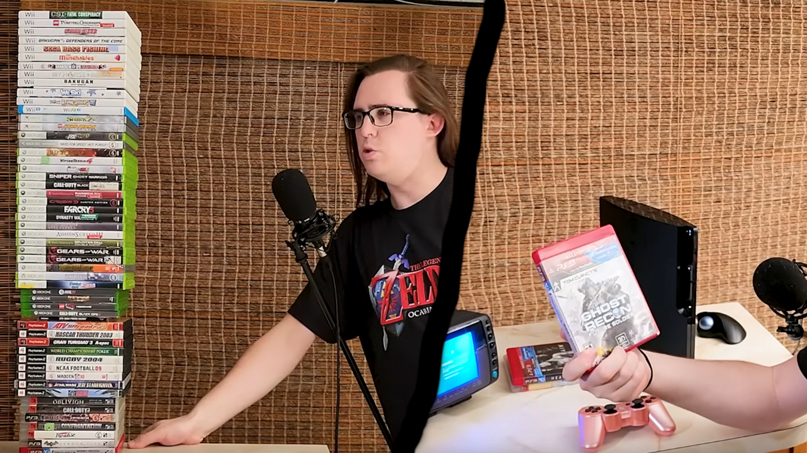

My Youtube Channel
@JasonGravesPoser. My YouTube channel is mainly about RETRO VIDEO GAMES but I sometimes talk about other things, such as youtube at large OR retail/shopping topics. I play RPGs and Adventure games above all else, and my channel has many such reviews of these games.
Unlike most retro video game channels, I do not consider myself to be nostalgia or 'back when we were kids' focused. It's more from a perspective of someone playing these games for the first time in the 2020s. My whole life I have LOVED video games, but I never really differentiated between old or new, games were always just games to me. As a result I grew up playing games from all eras, my dad exposed me to pre NES stuff, and my first game system was my Mom's NES from when she was a kid, BUT I'm still a 2000s kid so the PS2 and Wii were mainstays for me as well. Because I liked games so much I wanted everything, and as a result, over time I got everything. My perspective is more about the games than it is what it's like to be in the 90s playing them if that makes sense.
Notable Youtube Projects

Going to 104 Goodwill stores, all around the state of Florida. This was a huge success for me. Thrift stores used to be known for their great deals on video games, but recently finding any good deals had become a challenge, so I decided to see for myself how bad things had gotten. Going to over 100 different stores gives me a large sample size to analyze, and I found it interesting how one company's stores can wear so many different faces.
I didn't find anything too amazing on my travels, but I still had to try everything out....
This one was fun, I love rapid fire roasting a whole bunch of games all at once. It's probably my favorite type of video to make.
The visual of a massive tower of games I bought at goodwill slowly over the course of an hour shrinking until there's nothing left is absolutely my favorite visual from anything on my channel. And of course the ending is legendary! Couldn't have concluded the goodwill saga any other way! Check it out for yourself if you haven't seen, no spoilers!
Mathematically Worst are as much data analysis projects as they are typical reviews! I surveyed as many "worst" games of all time lists as I could find, then took a mathmatical formula in an attempt to create a ranking of the worst games on the NES/SNES!
Using Google Earth, I visually represented how bad each game is, and made sort of a poorman's Jon Bois styled breakdown.
Full Series Retrospectives, I played through and reviewed all the games of the Phantasy Star and Paper Mario series! Some of my best work is hidden inside these, I especially like my segments on Phantasy Star 3, the Original Paper Mario, and Color Splash.
Programming/Analysis Projects
HERE is a tour of an app I developed designed to keep track of your video game collection. This is the github link. It was written using react native and Expo Go, I made an apple executable, but have not rendered an android version, BUT it should work in theory just as well on android.
This is a screenshot from data analysis I did of NBA Free Throws. Using Python, ProBasketballReference.com, Excel, and Google Earth, I analyzed every NBA franchise and how their win percentage was affected by free throw shooting. (Spoilers: Winning percentage improved with a large enough sample size, but very little, and free throw shooting rates are a poor indicator of who will win a given NBA game.)
This website ;) made using the classic HTML/CSS/Javascript. Designed to look like something you might have seen in the late 90s or early 2000s. The idea came after I learned about iframes lol. I had always sort of wanted to make a website for myself but never really ut in the work until now. I think it turned out fairly well imho.
HERE is a tour of another app I developed, designed to find healthy food options for the people of Orange county florida. It was written using react native and Expo Go. Unfortunatly this app's code is technically owned by Orange county, so I can not share.